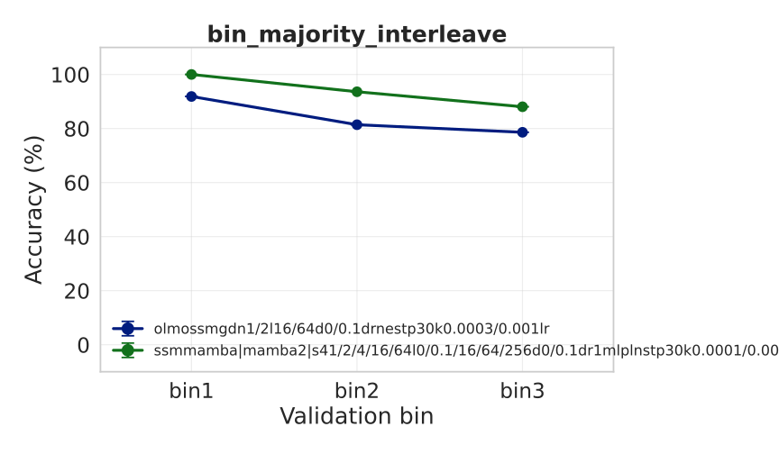
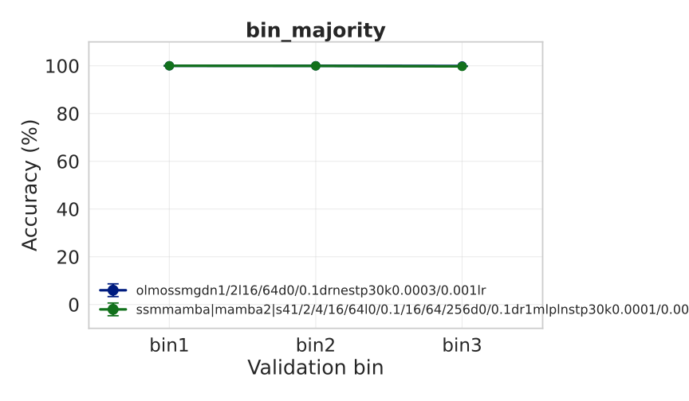
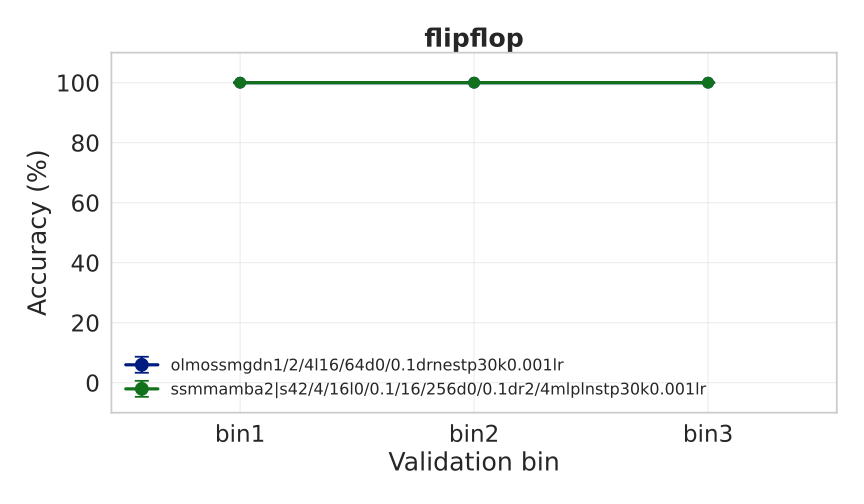
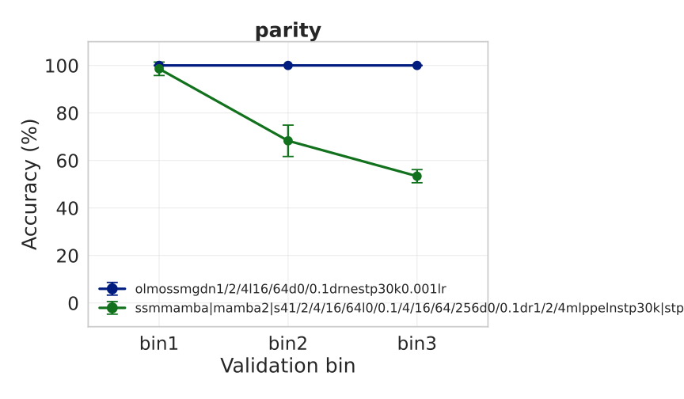
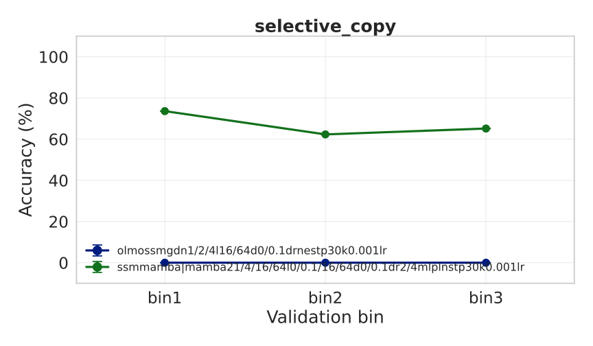
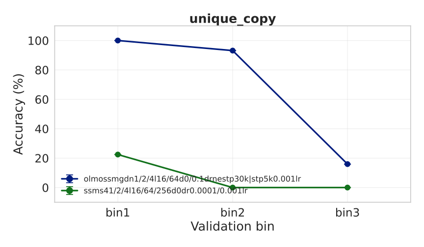

bin_majority_interleave

bin_majority

olmogdn1l16d0.1drnestp30k0.001lr (99.9%), olmogdn1l64d0drnestp30k0.001lr (99.9%), olmogdn2l64d0.1drnestp30k0.001lr (99.9%), olmogdn1l16d0drnestp30k0.001lr (99.8%), olmogdn1l64d0.1drnestp30k0.001lr (99.8%), +8 more
flipflop

olmogdn1l16d0.1drnestp30k0.001lr (100.0%), olmogdn1l16d0drnestp30k0.001lr (100.0%), olmogdn1l64d0.1drnestp30k0.001lr (100.0%), olmogdn1l64d0drnestp30k0.001lr (100.0%), olmogdn2l16d0drnestp30k0.001lr (100.0%), +7 more
parity

olmogdn1l64d0drnestp30k0.001lr (100.0%), olmogdn2l64d0.1drnestp30k0.001lr (100.0%), olmogdn1l64d0.1drnestp30k0.001lr (100.0%), olmogdn4l64d0drnestp30k0.001lr (99.8%), olmogdn1l16d0drnestp30k0.001lr (99.7%), +7 more
selective_copy

unique_copy
